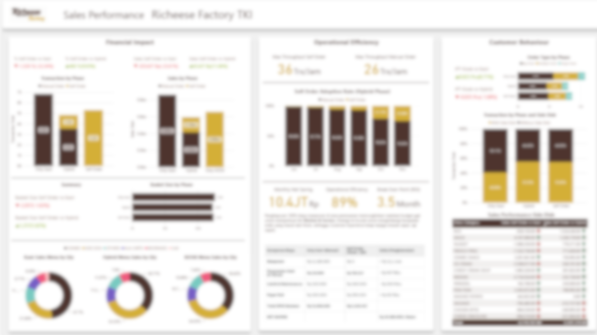
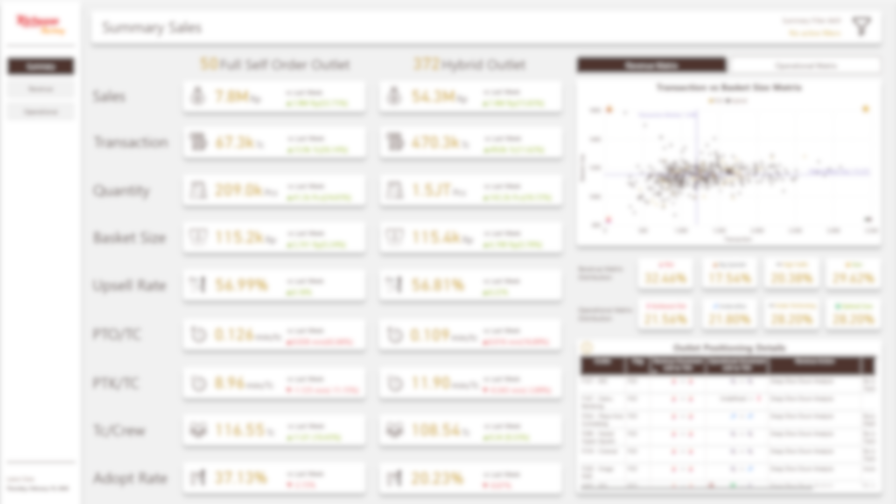
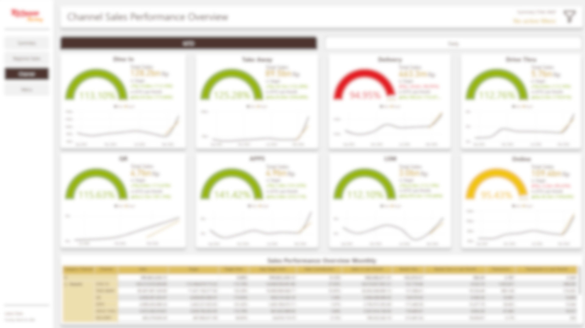
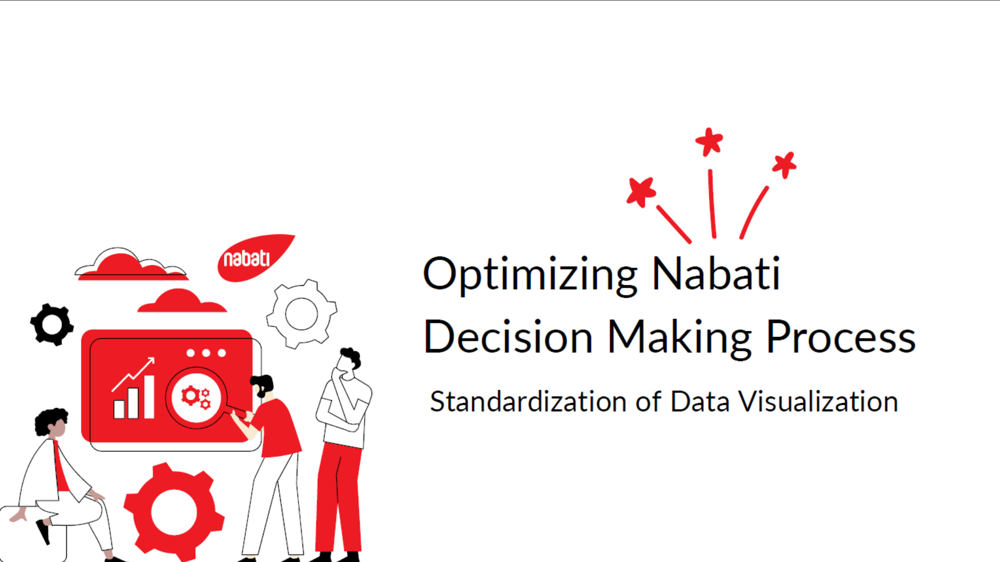
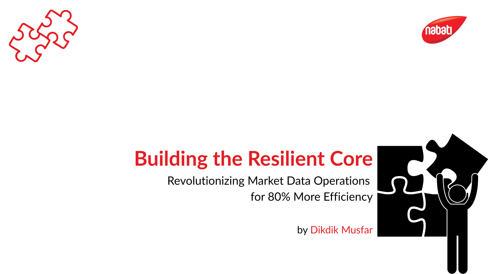
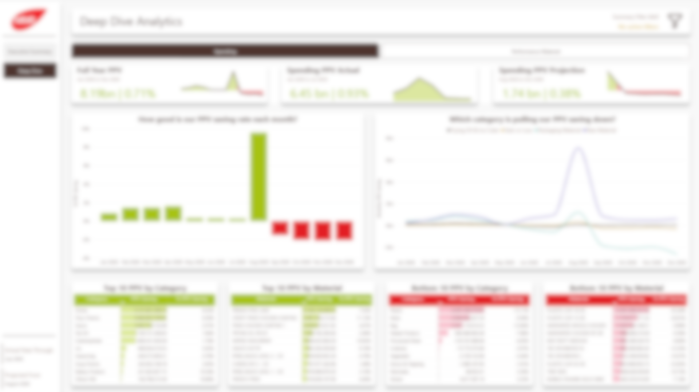

Bullion Bank Analytics
Indonesia's first gold banking analytics dashboard. Built in 2 months on direct request from top management, covering all gold products and customer segmentation to identify the best candidates.
"One page that answers every executive question about gold. No more digging through separate reports."

Branch Performance Hub
Previously, each branch pulled its own data and ran into server errors regularly. This dashboard centralizes everything in one stable place that anyone can access anytime.
"1,000 branches, one source of data. No waiting for emails, no asking around."

Empowering MSME Growth
MSME data was being collected manually and was inconsistently structured. This dashboard replaced that process and helped the team surface growth opportunities that were previously invisible.
"Good data isn't just about accuracy. It's about who ends up being helped because of it."

Smart Agent Tracking
Field agents are the frontline of the business but their contribution was hard to measure. This dashboard made performance visible and gave leadership the data needed to justify further investment.
"If the contribution isn't measured, it won't be valued the way it deserves."

Automotive Insights
Integrated third-party and internal data to automate daily loan application reporting. The team no longer waits for manual recaps before making strategy calls.
"When internal and external data connect, the team can move faster than the competition."

Timely Payroll Assurance
Payroll transfer delays directly erode customer trust. This dashboard helps the team spot and resolve transaction anomalies before they turn into complaints.
"A problem you can't see is a problem you can't fix. This dashboard makes the invisible visible."

Teacher Distribution Analytics
Teacher distribution across West Java was done manually and was prone to bias. This platform automated the process and gave the government a clear, data-backed basis for fair resource allocation.
"Data can be a tool for fairness, as long as the intent behind it is right."

Full Self Order Rollout
Quantitative impact analysis on a digitalized ordering pilot. Found 3% to 13% sales uplift across outlets. The analysis directly drove the decision to roll out nationally.
"Digitalization is a method, not a goal. The data is what proves whether it's actually working."

Daily Sales Performance
Replaced manual spreadsheet recaps with an interactive dashboard that serves as the single source of truth for daily sales across all management levels.
"No more waiting for recap emails. The data is already there, just open it."

Weekly Sales Performance Pulse
Near real-time weekly dashboard with early warnings per outlet segment. Leadership gets actionable signals before small issues become large problems.
"A full week of data, compressed into one page that you can act on immediately."

The Nabati ProductDNA Design System
Nabati's first BI visual standard. Every template, theme, and formatting rule follows Nabati's product identity, so new developers are immediately familiar and user revision requests dropped significantly.
"Small, consistent improvements leave a legacy that outlasts any single project."

Market Innovation Intelligence
Restructured market data modeling using CTEs and star schema. More resilient to data changes and 80% more efficient to maintain than the previous approach.
"The strongest architecture isn't the most complex one. It's the one most ready for change."

RKI KPI Ops
A unified QSR operations platform combining three prior projects. Integrates LLM-generated insights, auto-converts to PDF, and delivers to every management level every morning.
"Every morning, every manager already knows what happened yesterday and what to do today."

Sentinel — Profit & Loss
Real-time P&L cost anomaly detection with LLM-generated action recommendations. Built with the Finance team so the report fits how they actually work.
"Catching a cost anomaly early is the difference between a correction and a crisis."

Purchase Price Variance (PPV)
Raw material price shifts used to be spotted too late to act on. This dashboard tracks variance across all materials, flags significant movements with early warnings, and projects cost impact forward so procurement and finance stay aligned with monthly budget planning.
"Knowing a price moved is useful. Knowing before it hits your budget is what actually matters."